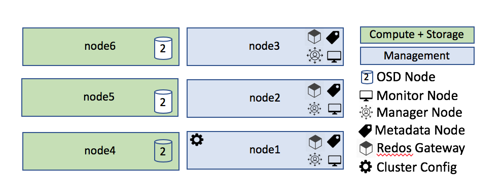
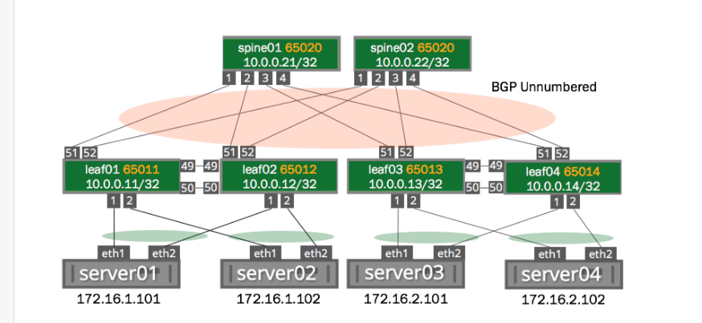
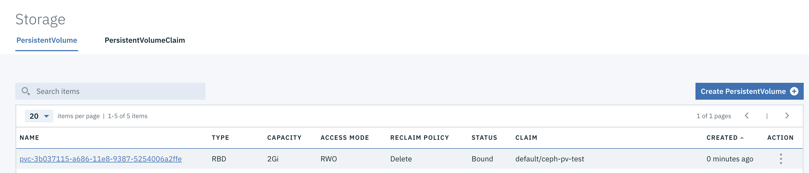

Note: The recipes in this document need a kubernetes (k8s) provider for the examples. This document will use IBM Cloud Private (ICP) as the k8s platform. Other providers will be slightly different, but the principles and general methodology should be the same for any k8s provider. Recipes may be provided for various linux flavors, again, the principles are the same, specific details may vary.
Table of Contents
- Introduction
- Things to Consider Prior to Choosing a Storage Solution
- Recipes
- Integrating with an External NFS Server
- Deploying an External Ceph Instance and Integrating with ICP
- Deploying an Internal Ceph/Rook Instance
- Deploying an External Gluster Instance
- Deploying an Internal Gluster Instance
- Integrating with an existing VMware vCenter 6.5 Instance
- Integrating with an existing S3 storage provider
Introduction
Kubernetes can consume storage solutions deployed either as a part of a cluster (internal storage) or storage provided by an external service (external storage).
Deploying a workload storage solution as a part of a cluster (internal storage) will limit access to the storage to workloads running inside the cluster. This will be more secure than deploying an external instance of the storage provider, but also limits who can consume the storage unless steps are taken to expose the storage outside the cluster.
The use case will determine which you choose to deploy.
If your objective is to have a large storage solution which can be consumed by multiple kubernetes clusters or non-kubernetes workloads, then your solution should include an instance of the storage provider which is external to the k8s cluster and then integrate your k8s instance with that storage provider via storage classes.
If your objective is to have a secure storage solution which is only supporting a single k8s cluster, then you will want to deploy a storage provider inside the cluster and point your storage classes to the internal instance.
Another alternative is to have a single k8s cluster which implements an internal storage provider but exposes the API service outside the cluster. This could then be used as a storage provider for other k8s clusters.
It should be noted that the recipes in this document will describe implementing block and filesystem storage for workloads only (not platform storage) and, other than S3 storage providers, will not consider object storage.
Things to Consider Prior to Choosing a Storage Solution
As with all cloud resources, high availability is of primary concern. When creating a storage provider either internally or externally, the instance should be architected such that an entire node can fail and the storage provider can survive the failure.
k8s is designed to be highly elastic and fungible. Nodes and processes can fail and k8s will just redeploy them elsewhere assuming adequate available resources.
Consider a situation where an internal GlusterFS instance has been created in a smaller k8s environment and three storage nodes are provisioned. If the utilization of the overall storage environment reaches is high and the implementation of the storage provider does not have enough resources to spread the load well, data could be lost and/or the storage provider could go down altogether.
Just like master nodes, storage nodes should run with anti-affinity rules such that no two storage nodes are running on the same physical infrastructure. This way the loss of a single physical node does not take out 2/3 of your available capacity.
As a rule, a larger volume of storage nodes spread accross a larger number of physical nodes will be a better solution with a larger tolerance for failure.
One should also avoid running multiple Ceph OSDs or Gluster Bricks on the same node. It does no good to have 9 GlusterFS bricks in your environment if they are running on only three nodes and one of the nodes fails. In this case, you have still lost 30% of your capacity with one failure.
Different storage technologies can handle various amounts of loss (see product documentation for specific details for your chosen technology). A solution architect should be aware of those details and ensure whatever solution they choose to implement can handle the loss of at least one node.
The number of nodes you choose to tolerate may be more than one based on business need, but any solution should take advantage of the traits of the k8s platform and ensure the storage infrastructure is properly architected.
Recipes
Recipe 1: Integrating with an External NFS server
IMPORTANT: Whereas NFS is probably the easiest storage provider to configure for k8s and is useful in a development environment, IBM does not recommend using NFS for workload storage in production for a number of reasons.
- The standard NFS storage provider for k8s is not dynamic and requires NFS PVs be manually created (or scripted) and manual processes are prone to errors and can cause a delay for end users if no PVs exist with the needed attributes. This requires an operator to manually intervene in the DevOps process which is against basic DevOps principles.
- NFS is not secure.
- NFS is slow.
If you need an NFS storage provider for dev purposes or it is required for some other reason, the following will help you make sure it is effective in a kubernetes environment.
Creating the NFS Server
Instructions for installing an NFS server differ slightly based on the operating system and instructions for doing so are ubiquitous on the internet. It is a fairly trivial exercise and will not be reproduced here. There are, however, a few recommendations for how to configure it once it is installed.
Recommendations for the NFS server:
- Use LVM device mapping so that additional storage space can be added if needed.
- Do not give global mount permissions for NFS paths. This could allow different users on different clusters to mount the same path and overwrite each other. Each k8s cluster should have its own mount path.
- If sharing the NFS server with other non-k8s services, each other server should have its own mount permissions and mount path with no globol mount permissions. If a user can mount an NFS path via k8s and set the PV attribute to "reclaim", when the workload is removed k8s will run
rm -rf /at the mount path which will result in permanently deleting anything on that path. Extreme caution should be exercised to prevent this possibility. - Make sure attributes on the mount path include "sync" to prevent sync errors when consuming ReadWriteMany (RWX) PVs.
admin@nfs-server:~$ cat /etc/exports
/storage/cluster1 1.2.3.4(rw,no_subtree_check,sync,insecure,no_root_squash)
Consuming NFS storage
Create a new .yaml file with contents similar to the following:
# myNfsVolume1.yaml
kind: PersistentVolume
apiVersion: v1
metadata:
name: myNfsVolume1
spec:
capacity:
storage: 5Gi
accessModes:
- ReadWriteOnce
persistentVolumeReclaimPolicy: Recycle
nfs:
path: /storage/cluster1/myNfsVolume1
server: 1.2.3.4
This PV will have a total of 5GB of storage space, allow only one pod to have access, and when the deployment that is consuming it is deleted, its contents will be wiped and it will be placed back in the pool.
Install your new PV using kubectl:
kubectl create -f myNfsVolume1.yaml
Recipe 2: Deploying an External Ceph Instance and Integrating with ICP
Ceph is short for "cephalopod", a class of mollusks of which the octopus is a member. The octopus is used as the logo for Ceph and this name was chosen because the parallel processing nature of both the octopus and the software.
There are two ways of integrating ICP with Ceph. The Ceph Rook open source project provides support for running the entire Ceph environment within a k8s cluster, utilizing local (hostpath) storage as raw disk for the OSD nodes. This method will install all of Ceph as workloads running within the cluster. This is the subject of a separate recipe and this recipe will focus on installing Ceph external to your k8s clsuter.
For a more robust solution we will deploy a Ceph implementation outside of ICP and use that as the provider for a storage class which will allow any application to consume Ceph rbd dynamic storage.
Doing so requires an external CEPH infrastructure. This document will walk through installing Ceph and integrating it with ICP for dynamic storage provisioning.
Ceph Architecture
We will use a distributed storage architecture. We will have three management nodes and three storage/compute nodes. Each storage/compute node has one disk with the operating system (/dev/sda) and two available raw disks for Ceph to consume (/dev/sdb, and /dev/sdc).

Each node is connected to the network via two Mellanox ConnectX-4 cards configured for bonded 802.3ad link aggregation for 200Gb/s combined throughput. This provides for a hyperconverged and highly available architecture for both storage and data network traffic. OSD nodes do not host management functions and vice versa.
The network architecture connecting these nodes is similar to that depicted in this diagram taken from the Cumulus documentation.

All management nodes are redundant for high availability and management nodes should not run on the same physical nodes as storage nodes, so to implement this solution, you should use at least two servers (or VMs), one for hosting management nodes and one for hosting storage nodes.
In a highly available environment, it is recommended to run three management nodes and at least three storage nodes so that it can handle the loss of any single node.
In this document we will use ubuntu 18.04 as our host operating system.
The hosts are named node1 - node6, respectively, and node1 will be our admin node. node2 and node3 will be additional management nodes for HA and node4 - node6 will be compute/storage nodes.
We will first install Ceph and test creating and mounting a block device. Then we will integrate with ICP.
Prepare for Ceph installation
Download and install ceph-deploy
IMPORTANT: Run the following commands as the root user
- Add the release Key
wget -q -O- 'https://download.ceph.com/keys/release.asc' | sudo apt-key add -
- Add the CEPH packages to your repository
echo deb https://download.ceph.com/debian-{ceph-stable-release}/ $(lsb_release -sc) main | sudo tee /etc/apt/sources.list.d/ceph.list
replace {ceph-stable-release} with the release you would like to install e.g. mimic - debian-mimic
- Install ntp on all nodes
apt-get install -y ntp
If there is a local ntp server on your network, update /etc/ntp.conf with your local pool server and restart ntp.
- Install python on all nodes
apt-get install -y python
- Update and install
apt-get update
apt-get install -y ceph-deploy
- Create a
ceph-deployuser on all nodes.
useradd -m -s /bin/bash -c "ceph deploy user" ceph-deploy
echo "ceph-deploy:Passw0rd!" | sudo -S chpasswd
- Add ceph-deploy user to passwordless sudo on all nodes
echo 'ceph-deploy ALL=(root) NOPASSWD:ALL' |sudo EDITOR='tee -a' visudo
IMPORTANT: Run the following commands as the ceph-deploy user
- Enable running Ceph commands easier on other nodes
Login as your ceph-deploy user and create the following file at ~/.ssh/config. You may need to create both the /home/ceph-deploy/.ssh directory and the config file.
Host node1
Hostname node1
User ceph-deploy
Host node2
Hostname node2
User ceph-deploy
Host node3
Hostname node3
User ceph-deploy
Host node4
Hostname node4
User ceph-deploy
Host node5
Hostname node5
User ceph-deploy
Host node6
Hostname node6
User ceph-deploy
- Enable passwordless SSH for the ceph-deploy user from the admin node to all other nodes. Execute these commands as the the ceph-deploy user. Accept all defaults.
ssh-keygen -t rsa -P ''
This will create ssh public and private keys in ~/.ssh . Copy the keys to all other nodes:
ssh-copy-id -i ~/.ssh/id_rsa ceph-deploy@node1
ssh-copy-id -i ~/.ssh/id_rsa ceph-deploy@node2
ssh-copy-id -i ~/.ssh/id_rsa ceph-deploy@node3
ssh-copy-id -i ~/.ssh/id_rsa ceph-deploy@node4
ssh-copy-id -i ~/.ssh/id_rsa ceph-deploy@node5
ssh-copy-id -i ~/.ssh/id_rsa ceph-deploy@node6
It will ask you for the password for the ceph-deploy user, answer with the password you created when you created the user. When this is complete you should be able to execute ssh ceph-deploy@node1 and get from the ceph-deploy user on the admin host to the remote host without providing a password.
IMPORTANT: Make sure you copy the ID back to the local node (node1) as well so the process can ssh back to itself.
Deploy Ceph Execute the following commands as the ceph-deploy user on the admin node.
- Create the cluster
From the ceph-deploy user's home directory:
mkdir mycluster
cd mycluster
ceph-deploy new node1
- Install Ceph on all nodes
ceph-deploy install node1 node2 node3 node4 node5 node6
- Deploy the initial monitor and gather the keys
ceph-deploy mon create-initial
- Copy the admin config files to all nodes
ceph-deploy admin node1 node2 node3 node4 node5 node6
- Deploy a manager node
ceph-deploy mgr create node1
- Deploy storage nodes
The data should be the raw device name of an unused raw device installed in the host. The final parameter is the hostname. Execute this command once for every raw device and host in the environment.
ceph-deploy osd create --data /dev/sdb node4
ceph-deploy osd create --data /dev/sdc node4
ceph-deploy osd create --data /dev/sdb node5
ceph-deploy osd create --data /dev/sdc node5
ceph-deploy osd create --data /dev/sdb node6
ceph-deploy osd create --data /dev/sdc node6
- Install a metadata server
ceph-deploy mds create node1
- Deploy the object gateway (S3/Swift) (optional)
ceph-deploy rgw create node1
- Deploy mgr to standby nodes for HA (optional)
On the admin node edit /home/ceph-deploy/mycluster/ceph.conf file and update the mon_initial_members, mon_host, and public_network values to reflect the additional nodes. The resulting file should look something like this:
[global]
fsid = 264349d2-8eb0-4fb3-9992-bbef4c2759cc
mon_initial_members = node1,node2,node3
mon_host = 10.10.2.1,10.10.2.2,10.10.2.3
public_network = 10.10.0.0/16
auth_cluster_required = cephx
auth_service_required = cephx
auth_client_required = cephx
Then deploy the new nodes:
ceph-deploy --overwrite-conf mon add node2
ceph-deploy --overwrite-conf mon add node3
- Add additional mgr nodes for resiliency
ceph-deploy --overwrite-conf mgr add node2
ceph-deploy --overwrite-conf mgr add node3
- Check the status of your cluster
sudo ceph -s
The result should look something like this:
cluster:
id: 2fdde238-b426-4042-8cf3-6fc9a151cb9b
health: HEALTH_OK
services:
mon: 3 daemons, quorum node1,node2,node3
mgr: node1(active), standbys: node2, node3
osd: 6 osds: 6 up, 6 in
rgw: 1 daemon active
data:
pools: 4 pools, 1280 pgs
objects: 221 objects, 1.2 KiB
usage: 54 GiB used, 11 TiB / 11 TiB avail
pgs: 1280 active+clean
You should see HEALTH_OK. If not, look for your error message in the troubleshooting section below.
If you did not install the rados gateway (rgw) then you will not yet see any pools defined.
The likelihood is that your health message will say something like:
health: HEALTH_WARN
too few PGs per OSD (3 < min 30)
If you do not see this error, you can skip this section until you do see it (and you will).
A PG is a "placement group" and governs how data is stored in your environment. A full discussion of how this works is beyond the scope of this document, but resolving the warning can be done without knowing all of the details.
For more information on this number see:
- http://docs.ceph.com/docs/giant/rados/operations/placement-groups/
- https://stackoverflow.com/questions/39589696/ceph-too-many-pgs-per-osd-all-you-need-to-know
There are two numbers that are important to modify to resolve this issue, the first is the PGs and the second is the PGPs. The PG is the number of placement groups available and the PGP is the number that are applied to your implementation. Any time you increase the PGs you should also increase the number of PGPs.
The documentation recommends using PG numbers with powers of 2 (2, 4, 16, 32, 64, 128,...). The simple solution to this issue is to start with a smaller number, apply it and see what the status says. If it is still too small, continue to apply ever larger powers of 2 until the warning goes away.
To change the number of PGs and PGPs, us the following command against every pool in your environment.
To see the pools in your environment use the command:
sudo ceph osd lspools
Which should result in a list that looks something like this:
1 .rgw.root
2 default.rgw.control
3 default.rgw.meta
4 default.rgw.log
For each pool in the list execute:
sudo ceph osd pool set [pool name] pg_num <number>
sudo ceph osd pool set [pool name] pgp_num <number>
Example:
sudo ceph osd pool set .rgw.root pg_num 32
sudo ceph osd pool set .rgw.root pgp_num 32
Then check your status and see if you need to raise it further. Continue increasing the number at the end of that command by powers of 2 until the warning goes away.
Once you have a healthy cluster you can start using your new storage.
The following command will show you all of your storage devices and their status.
Note: OSD = Object Storage Daemon
sudo ceph osd tree
The result should look something like this:
-1 192.85042 root default
-3 87.32849 host node4
0 ssd 3.63869 osd.0 up 1.00000 1.00000
1 ssd 3.63869 osd.1 up 1.00000 1.00000
-5 47.30293 host node5
24 ssd 3.63869 osd.2 up 1.00000 1.00000
25 ssd 3.63869 osd.3 up 1.00000 1.00000
-7 14.55475 host node6
37 ssd 3.63869 osd.4 up 1.00000 1.00000
38 ssd 3.63869 osd.5 up 1.00000 1.00000
Test your newly installed Ceph instance
Create and mount a block device
Block devices are the most commonly used types of storage provisioned by Ceph users. Creating and using them is relatively easy once your environment is up and running.
Block devices are known as rbd devices (Rados Block Device). When you create a new block device and attach it to your filesystem it will show up as /dev/rbd0, /eev/rbd1, etc.
Before you can create a block device you need to create a new pool in which they can be stored.
sudo ceph osd pool create rbd 128 128
NOTE: The two numbers at the end of this command are the PG and PGP for this pool. As a start, you should use the same values you used to get the health warning error to go away. These values may need to be changed based on the size of your environment and number of pools as per the above discussion.
Once your pool has been created you can then create a new image in that pool. An image is block storage on which you can create a filesystem and is analogous to a virtual disk.
sudo rbd create myimage --size 10240 --image-feature layering
This command will create a new 10GB disk named "myimage" suitable for mounting on your filesystem. The --size parameter is in MB.
To view the images in your pool use sudo rbd ls
Now, ssh to the machine on which you want to mount this image.
Before the storage can be mounted you must install the Ceph client on the target machine.
sudo apt-get install -y ceph-common ceph-fuse
Create yourself a mount point:
sudo mkdir /mnt/myimage
sudo rbd map myimage --name client.admin
myimage is the name of the image you created previously everything else should be exactly as shown.
The result of this command is a new device named /dev/rbd0.
Next, put a filesystem on your new block device :
sudo mkfs.ext4 -m0 /dev/rbd0
... and mount your new filesystem at your created mount point:
mount /dev/rbd0 /mnt/myimage
Now, if you do an ls on your newly mounted filesystem you should see a lost+found directory indicating the root of a partition.
Remove your test configuration
- Remove your test mount
umount /mnt/myimage
- Remove the rbd image from your Ceph instance
sudo rbd unmap myimage --name client.admin
- Remove the pool
sudo ceph osd pool delete rbd
Interating ICP with CEPH
- Create an rbd pool for use with ICP
sudo ceph osd pool create icp rbd 1024 1024
- Create a new ceph user for use with ICP
sudo ceph auth get-or-create client.icp mon 'allow r' osd 'allow class-read object_prefix rbd_children, allow rwx pool=icp' -o ceph.client.kube.keyring
- To deploy images as this user, you will need to create a keyring file for your worker nodes.
sudo ceph auth get client.icp > ./ceph.client.icp.keyring
- Copy this keyring to /etc/ceph
cp ./ceph.client.icp.keyring /etc/ceph/
- Retrieve the Ceph admin key as base64
sudo ceph auth get-key client.admin |base64
This should return something like: QVFDSGhYZGIrcmc0SUJBQXd0Yy9pRXIxT1E1ZE5sMmdzRHhlZVE9PQ==
- Retrieve the Ceph ICP key as base64
sudo ceph auth get-key client.icp |base64
This should return something like: QVFERUlYNWJKbzlYR1JBQTRMVnU1N1YvWDhYbXAxc2tseDB6QkE9PQ==
- Before you can use ceph with ICP you must have the ceph-common package installed on each worker node
apt-get install -y ceph-common
- You will now need to copy the ceph.client.admin.keyring and ceph.icp.admin.keyring to the /etc/ceph directory on each worker node
scp root@cephnode:/etc/ceph/ceph.client.admin.keyring /etc/ceph/
scp root@cephnode:/etc/ceph/ceph.icp.admin.keyring /etc/ceph/
Note: If you do not have remote root login enabled (and you shouldn't) then you will need to copy these files to a temporary location which is accessible to a non-root user and then as root, ssh them to your worker nodes and move them to the /etc/ceph directory. Then delete them from the intermediate location.
- Create a new file named ceph-secret.yaml with the following contents:
apiVersion: v1
kind: Secret
metadata:
name: ceph-secret
namespace: kube-system
data:
key: QVFBOFF2SlZheUJQRVJBQWgvS2cwT1laQUhPQno3akZwekxxdGc9PQ==
type: kubernetes.io/rbd
- Create the secret in ICP
Use the ICP UI to configure your kubectl client and create the 'ceph-secret' secret with the following command:
kubectl create -f ./ceph-secret.yaml
- Create a new file named ceph-user-secret.yaml with the following contents:
apiVersion: v1
kind: Secret
metadata:
name: ceph-user-secret
namespace: default
data:
key: QVFCbEV4OVpmaGJtQ0JBQW55d2Z0NHZtcS96cE42SW1JVUQvekE9PQ==
type: kubernetes.io/rbd
Where data.key is the key retrieved from ceph for the client.icp user.
- Create the user secret in ICP
Use the ICP UI to configure your kubectl client and create the 'ceph-user-secret' secret in the default namespace with the following command:
kubectl create -f ./ceph-user-secret.yaml
Important Note: Because this user was created in the 'default' namespace (as noted in metadata.namespace above) This storage class can only be used in the default namespace.
To use Ceph dynamic provisioning in other namespaces you must create the same user secret in every namespace where you want to deploy Ceph dynamic storage.
Because the storage class specifically references "ceph-user-secret" the secret should always have this name no matter what namespace is used.
- Create the Ceph RBD Dynamic Storage Class
Create a file named 'ceph-sc.yaml' with the following contents:
apiVersion: storage.k8s.io/v1beta1
kind: StorageClass
metadata:
name: ceph
annotations:
storageclass.beta.kubernetes.io/is-default-class: "true"
provisioner: kubernetes.io/rbd
parameters:
monitors: 10.10.0.1:6789,10.10.0.2:6789,10.10.0.3:6789
adminId: admin
adminSecretName: ceph-secret
adminSecretNamespace: kube-system
pool: icp
userId: icp
userSecretName: ceph-user-secret
fsType: ext4
imageFormat: "2"
Where parameters.monitors are the IP addresses and ports of all Ceph monitor nodes, comma separated.
Remove metadata.annotations.storageclass.* if this should not be the default storage class.
IMPORTANT: As noted above, there will need to be a secret named ceph-user-seret in each of the namespaces where will use Ceph dynamic storage provisioning. They should all be the same with the admin key for the userId user.
- Test your new storage class by creating a new PV from the ceph pool.
Create a file named ceph-pvc.yaml with the following contents:
kind: PersistentVolumeClaim
apiVersion: v1
metadata:
name: ceph-claim
spec:
accessModes:
- ReadWriteOnce
resources:
requests:
storage: 2Gi
Create the PV with the following command:
kubectl create -f ./ceph-pvc.yaml
Check the status of your new PVC:
kubectl get persistentvolumes
root@master:/opt/icp/ceph# kubectl get persistentvolumes
NAME CAPACITY ACCESS MODES RECLAIM POLICY STATUS CLAIM STORAGECLASS REASON AGE
helm-repo-pv 5Gi RWO Delete Bound kube-system/helm-repo-pvc helm-repo-storage 6d
image-manager-10.10.10.1 20Gi RWO Retain Bound kube-system/image-manager-image-manager-0 image-manager-storage 6d
logging-datanode-10.10.10.3 20Gi RWO Retain Bound kube-system/data-logging-elk-data-0 logging-storage-datanode 6d
mongodb-10.10.10.1 20Gi RWO Retain Bound kube-system/mongodbdir-icp-mongodb-0 mongodb-storage 6d
pvc-3b037115-a686-11e8-9387-5254006a2ffe 2Gi RWO Delete Bound default/ceph-pv-test ceph 1m
Look for a PV with a storage class of "ceph"
or
In the ICP UI, navigate to Platform->Storage and look for a PV of type "RBD": 
List your created PVs from Ceph:
On your ceph admin or monitor node execute:
sudo rbd list
You should see something like:
$ sudo rbd list
kubernetes-dynamic-pvc-7d5c8c11-a687-11e8-9291-5254006a2ffe
Remove your test PVC with the following command:
kubectl delete -f ./ceph-pvc.yaml
- To use your storage class with a deployment you must install the Ceph client on all schedulable nodes. Execute the following on all ICP worker nodes:
apt-get install -y ceph-common
- Copy /etc/ceph/ceph.conf, /etc/ceph/ceph.client.icp.keyring, and /etc/ceph/ceph.client.admin.keyring from your Ceph admin node to each worker node.
From each worker node as root execute:
scp root@ceph-admin:/etc/ceph/ceph.conf /etc/ceph/
scp root@ceph-admin:/etc/ceph/*.keyring /etc/ceph/
or
Copy these files to the boot node and use scp to move them to all worker nodes without having to login once for each worker node (assuming you have configured passwordless ssh from your boot node to all your worker nodes)
- Depending on the version of Ceph and kubernetes you are using you may get an error when attempting to deploy a pod using Ceph dynamic storage. The event will look something like this:
MountVolume.WaitForAttach failed for volume "pvc-f00434db-a8d6-11e8-9387-5254006a2ffe" : rbd: map failed exit status 110, rbd output: rbd: sysfs write failed In some cases useful info is found in syslog - try "dmesg | tail" or so. rbd: map failed: (110) Connection timed out
Further investigation into the syslog file on the worker node should show an entry something like this:
Aug 25 13:32:50 worker1 kernel: [745415.055916] libceph: mon0 10.10.2.1:6789 feature set mismatch, my 106b84a842a42 < server's 40106b84a842a42, missing 400000000000000
... along with a bunch of other error messages
This error message indicates a missing feature flag in the Ceph client. The feature missing is CRUSH_TUNABLES5
To resolve this issue execute the following command on your Ceph admin or monitor node:
sudo ceph osd crush tunables hammer
Your pod should now finish provisioning.
Recipe 3: Deploying an Internal Ceph/Rook Instance
Recipe 4: Deploying an Internal GlusterFS Instance
Recipe 5: Deploying an External GlusterFS Instance
Recipe 6: Integrating with an existing VMware vCenter 6.5 Instance
It is important to note that using VMware storage for dynamic storage provisioning uses the VMware API and this is not vSAN. vSAN is a completely separate technology which takes storage local to multiple hypervisors and makes it available as a VMware datastore.
To use VMware for dynamic storage provisioning you need an existing VMware datastore and access to the API server with the needed credentials for creating storage volumes. That is what this tutorial will focus on.
All of the prerequisites noted here must be complete prior to installing ICP.
Configure vSphere for use by ICP
First, to use dynamic storage provisioning on VMware you must create a user with the proper VMware permissions that can be used to interact with VMware.
The IBM knowledgebase for this topic can be found at https://www.ibm.com/support/knowledgecenter/en/SSBS6K_2.1.0.3/manage_cluster/add_vsphere.html.
Prerequisites for creating the vssphere storage can be found at https://www.ibm.com/support/knowledgecenter/SSBS6K_2.1.0.3/installing/cloud_provider_vsphere.html#prereq
It should be noted that as of this writing, only the ReadWriteOnce storage access mode.
The following are important restrictions on using VMware for your dynamic storage.
- All IBM® Cloud Private cluster nodes must be under one vSphere VM folder.
- All IBM Cloud Private master nodes must be able to access vCenter.
- The node host name must be same as the VM name.
-
Node host names must comply with the regex: [a-z]?(\.[a-z0-9]?)*, and must also comply with the following restrictions:
- They must not begin with numbers.
- They must not use capital letters.
- They must not have any special characters except . and -.
- They must contain at least three characters but no more than 63 characters.
- The disk UUID on the node VMs must be enabled: the disk.EnableUUID value must be set to True.
- The user that is specified in the vSphere cloud configuration must have privileges to interact with vCenter.
You will ned to create a vCenter user to use for the dynamic storage provisioning. We will use "icpadmin" as our user. We also need to create a few roles and assign them to this user so that it has the correct authority. The following information is correct for VMware 6.5 and may not be applicable for other versions.
Role 1: manage-k8s-node-vms
Privileges:
* Resource: Assign virtual machine to resource pool
* Virtual Machine -> Configuration: Add existing disk
* Virtual Machine -> Configuration: Add new disk
* Virtual Machine -> Configuration: Add or remove device
* Virtual Machine -> Configuration: Remove disk
* Virtual Machine -> Inventory: Create from existing
* Virtual Machine -> Inventory: Create new
* Virtual Machine -> Inventory: Create remove
Role 2: manage-k8s-volumes
Privileges:
* Datastore -> Allocate space
* Datastore -> Browse datastore
* Datastore -> Configure datastore
* Datastore -> Low level file operations
* Datastore -> Remove file
* Datastore -> Update virtual machine files
* Datastore -> Update virtual machine metadata
Role 3: k8s-system-read-and-spbm-profile-view
Privileges:
* Storage views: Configure service
* Storage views: view
Role 4: ReadOnly
Privileges: none
Alternatively, you can just create a single role called "icpadmin" which has all of these privileges.
Next, assign the following roles for this user on all the needed vmware objects:
* Datacenter (only): k8s-system-read-and-spbm-profile-view
* Cluster (propogate ): manage-k8s-node-vms
* VM Folder (propogate): manage-k8s-node-vms
* Target Datastore (only): manage-k8s-volumes
* Datacenter, Datastore Cluster, and Datastore storage folder: ReadOnly
If you have created one role with all needed privileges, just assign that role to that user for all of the entities noted above: All pertinent Datacenters, clusters, hosts, resource pools, datastores, and folders.
Configure ICP for vSphere storage
On your ICP boot node, open the config.yaml file and add the following (spacing is important, use spaces and not tabs):
kubelet_nodename: hostname
cloud_provider: vsphere
vsphere_conf:
user: "<vCenter username for vSphere Cloud Provider>"
password: "<password for vCenter user>"
server: <vCenter server IP or FQDN>
port: [vCenter Server Port; default: 443]
insecure_flag: [set to 1 if vCenter uses a self-signed certificate]
datacenter: <datacenter name on which Node VMs are deployed>
datastore: <default datastore to be used for provisioning volumes>
working_dir: <vCenter VM folder path in which node VMs are located>
Example:
kubelet_nodename: hostname
cloud_provider: vsphere
vsphere_conf:
user: icpadmin
password: Passw0rd!
server: 1.2.3.4
port: 443
insecure_flag: 1
datacenter: CSPLAB
datastore: ExternalDemo
working_dir: my-icp-2103
Deploy your ICP instance as per normal.
Once your instance has been deployed you must create a storage class to consume the storage.
First, Create a .yaml file (vsphere.yaml) with the following contents:
kind: StorageClass
apiVersion: storage.k8s.io/v1
metadata:
name: vsphere
annotations:
storageclass.kubernetes.io/is-default-class: "true"
provisioner: kubernetes.io/vsphere-volume
parameters:
diskformat: thin
datastore: MyDatastore
The diskformat can be thin,zeroedthick, or eagerzeroedthick. The datastore should be changed to specify the name of the datastore where you want your volumes created.
Configure kubectl to point to your ICP instance.
Deploy your new storage class
kubectl create -f vsphere.yaml
Now, when installing helm charts you can specify dynamic storage using the 'vsphere' storage class and it will dynamically provision your PV to the specified datastore.